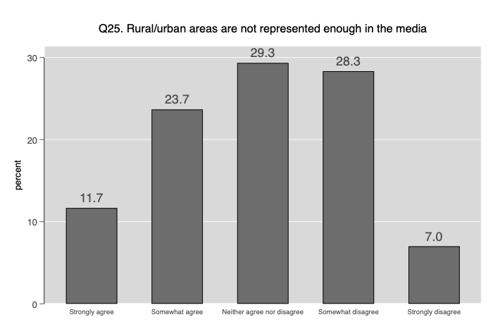
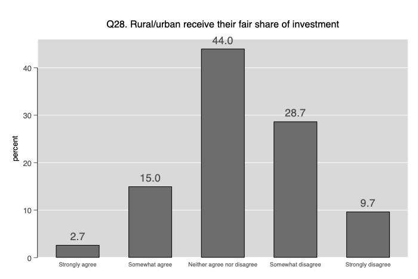

The sample for the pilot had an N = 300 (after elminating those who fail to pass the attention check screener).
All responses were-forced choice and we did not offer a don’t know option.
The sample was provided by the comercial firm NETQUEST (opt-in panel).
We included the following quotas (non-interblocking): gender, age, region (autonomous community), education level, size of the municipality (5 categories of population thresholds). The targets for these quotas were set to be representative of these characteristics in the Spanish population. All quotas were based on the responses of respondents to the corresponding survey questions, except the size of the municipality, which was provided directly by NETQUEST during the fielwdork.
We programmed the questionnaire and quotas in Qualtrics. NETQUEST was only in charge of sending the invitations and reminders to respondents, and rewarding them once they completed the survey. The fielwdork was conducted between February 4 and February 8.
In the survey we asked respondents about their postcodes. After completing the fieldowrk NETQUEST sent us the following information about the respondents based on their profiler: postcode, municipality of residence, age, gender.
Size of |
municipality of |
respondent | Freq. Percent Cum.
----------------+-----------------------------------
< 10,000 | 59 19.67 19.67
10,001-20,000 | 31 10.33 30.00
20,001-50,000 | 50 16.67 46.67
50,001-100,000 | 40 13.33 60.00
100,001-500,000 | 71 23.67 83.67
>500,001 | 49 16.33 100.00
----------------+-----------------------------------
Total | 300 100.00
We asked two questions about rural-urban self-location for the whole sample.
The question that we used as a filter for the rest of the items was the scale of rural-urban self-location (categories 1-3 urban, categories 4-6 rural)
Urban_rural_1 -- How would you describe the place where you live?
-----------------------------------------------------------------------------
| Freq. Percent Valid Cum.
--------------------------------+--------------------------------------------
Valid 1 Very urban | 100 33.33 33.33 33.33
2 Quite urban | 82 27.33 27.33 60.67
3 More urban than rural | 43 14.33 14.33 75.00
4 More rural than urban | 51 17.00 17.00 92.00
5 Quite rural | 18 6.00 6.00 98.00
6 Very rural | 6 2.00 2.00 100.00
Total | 300 100.00 100.00
-----------------------------------------------------------------------------
Those who answered that they live in the suburbs or outskirts of a big city or a town or small city were presented an additional question that asked whether any of these two photographs describes the place were they live (with the option of saying that none of the options describes the place were they live)
For those who live in the outskirts of big cities the results for the picture selection task are the following:
And which picture best represents where |
you live? | Freq. Percent Cum.
----------------------------------------+-----------------------------------
Detached houses | 10 29.41 29.41
Residential blocks | 12 35.29 64.71
None of these pictures represent where | 12 35.29 100.00
----------------------------------------+-----------------------------------
Total | 34 100.00
For those who live in midsize and small cities the results for the picture selection task are the following:
And which picture best represents where |
you live? | Freq. Percent Cum.
----------------------------------------+-----------------------------------
Detached houses | 27 26.21 26.21
Residential blocks | 41 39.81 66.02
None of these pictures represent where | 35 33.98 100.00
----------------------------------------+-----------------------------------
Total | 103 100.00
+-------------------+
| Key |
|-------------------|
| frequency |
| column percentage |
+-------------------+
How would you |
describe the place | How would you describe the place where you live?
where you live? | A big cit Suburbs o Town or s Country v Farm or h | Total
----------------------+-------------------------------------------------------+----------
Very urban | 60 7 32 1 0 | 100
| 88.24 20.59 31.07 1.08 0.00 | 33.33
----------------------+-------------------------------------------------------+----------
Quite urban | 7 17 47 11 0 | 82
| 10.29 50.00 45.63 11.83 0.00 | 27.33
----------------------+-------------------------------------------------------+----------
More urban than rural | 1 2 19 21 0 | 43
| 1.47 5.88 18.45 22.58 0.00 | 14.33
----------------------+-------------------------------------------------------+----------
More rural than urban | 0 7 5 39 0 | 51
| 0.00 20.59 4.85 41.94 0.00 | 17.00
----------------------+-------------------------------------------------------+----------
Quite rural | 0 1 0 17 0 | 18
| 0.00 2.94 0.00 18.28 0.00 | 6.00
----------------------+-------------------------------------------------------+----------
Very rural | 0 0 0 4 2 | 6
| 0.00 0.00 0.00 4.30 100.00 | 2.00
----------------------+-------------------------------------------------------+----------
Total | 68 34 103 93 2 | 300
| 100.00 100.00 100.00 100.00 100.00 | 100.00
We also asked a more direct dichotomous question about the rural-urban residence of respondents.
Urban_rural_4 -- Just to check, which kind of place best describes the area where you live?
----------------------------------------------------------------------------
| Freq. Percent Valid Cum.
-------------------------------+--------------------------------------------
Valid 1 A big city | 96 32.00 32.00 32.00
2 Countryside | 27 9.00 9.00 41.00
3 Somewhere in between | 177 59.00 59.00 100.00
Total | 300 100.00 100.00
----------------------------------------------------------------------------
+-------------------+
| Key |
|-------------------|
| frequency |
| column percentage |
+-------------------+
| Just to check, which kind of
How would you | place best describes the area
describe the place | where you live?
where you live? | A big cit Countrysi Somewhere | Total
----------------------+---------------------------------+----------
Very urban | 74 0 26 | 100
| 77.08 0.00 14.69 | 33.33
----------------------+---------------------------------+----------
Quite urban | 21 0 61 | 82
| 21.88 0.00 34.46 | 27.33
----------------------+---------------------------------+----------
More urban than rural | 1 4 38 | 43
| 1.04 14.81 21.47 | 14.33
----------------------+---------------------------------+----------
More rural than urban | 0 11 40 | 51
| 0.00 40.74 22.60 | 17.00
----------------------+---------------------------------+----------
Quite rural | 0 7 11 | 18
| 0.00 25.93 6.21 | 6.00
----------------------+---------------------------------+----------
Very rural | 0 5 1 | 6
| 0.00 18.52 0.56 | 2.00
----------------------+---------------------------------+----------
Total | 96 27 177 | 300
| 100.00 100.00 100.00 | 100.00
+-------------------+
| Key |
|-------------------|
| frequency |
| column percentage |
+-------------------+
| Just to check, which kind of
How would you | place best describes the area
describe the place | where you live?
where you live? | A big cit Countrysi Somewhere | Total
----------------------+---------------------------------+----------
A big city | 67 0 1 | 68
| 69.79 0.00 0.56 | 22.67
----------------------+---------------------------------+----------
Suburbs or outskirts | 13 2 19 | 34
| 13.54 7.41 10.73 | 11.33
----------------------+---------------------------------+----------
Town or small city | 16 2 85 | 103
| 16.67 7.41 48.02 | 34.33
----------------------+---------------------------------+----------
Country village | 0 21 72 | 93
| 0.00 77.78 40.68 | 31.00
----------------------+---------------------------------+----------
Farm or home in the c | 0 2 0 | 2
| 0.00 7.41 0.00 | 0.67
----------------------+---------------------------------+----------
Total | 96 27 177 | 300
| 100.00 100.00 100.00 | 100.00
We matched the municipality of residence of respondent to its DEGURBA classification. Initially, we did this through the postcode of respodents. However, in 5% of Spanish municipalities the same postcode is assigned to more than one muncipality that differ in their DEGURBA classification. For these respondents (around 30 in our sample) we matched them based on the municipality of residence, which was directly provided by the survey company (not directly asked in the survey).
+-------------------+
| Key |
|-------------------|
| frequency |
| column percentage |
+-------------------+
How would you |
describe the place | DEGURBA
where you live? | 1 2 3 | Total
----------------------+---------------------------------+----------
Very urban | 98 1 1 | 100
| 57.99 1.05 2.78 | 33.33
----------------------+---------------------------------+----------
Quite urban | 53 28 1 | 82
| 31.36 29.47 2.78 | 27.33
----------------------+---------------------------------+----------
More urban than rural | 12 26 5 | 43
| 7.10 27.37 13.89 | 14.33
----------------------+---------------------------------+----------
More rural than urban | 4 35 12 | 51
| 2.37 36.84 33.33 | 17.00
----------------------+---------------------------------+----------
Quite rural | 2 4 12 | 18
| 1.18 4.21 33.33 | 6.00
----------------------+---------------------------------+----------
Very rural | 0 1 5 | 6
| 0.00 1.05 13.89 | 2.00
----------------------+---------------------------------+----------
Total | 169 95 36 | 300
| 100.00 100.00 100.00 | 100.00
+-------------------+
| Key |
|-------------------|
| frequency |
| column percentage |
+-------------------+
How would you |
describe the place | DEGURBA
where you live? | 1 2 3 | Total
----------------------+---------------------------------+----------
A big city | 67 0 1 | 68
| 39.64 0.00 2.78 | 22.67
----------------------+---------------------------------+----------
Suburbs or outskirts | 23 11 0 | 34
| 13.61 11.58 0.00 | 11.33
----------------------+---------------------------------+----------
Town or small city | 73 28 2 | 103
| 43.20 29.47 5.56 | 34.33
----------------------+---------------------------------+----------
Country village | 6 55 32 | 93
| 3.55 57.89 88.89 | 31.00
----------------------+---------------------------------+----------
Farm or home in the c | 0 1 1 | 2
| 0.00 1.05 2.78 | 0.67
----------------------+---------------------------------+----------
Total | 169 95 36 | 300
| 100.00 100.00 100.00 | 100.00
For these questions we faced some problems to translate them. The expressions rural and urban people do not translate well into Spanish. Hence, we deviated slightly from the agreed wording by using the expression “gente de pueblo” (people from towns) and “gente de ciudad” (people from cities)
| Q11 Q13 Q12 Q14 Q15 Q16
-------------+------------------------------------------------------
Q11 | 1.0000
Q13 | 0.5570* 1.0000
Q12 | 0.2855* 0.4642* 1.0000
Q14 | 0.3211* 0.3789* 0.5198* 1.0000
Q15 | 0.2925* 0.3587* 0.4688* 0.6181* 1.0000
Q16 | 0.3081* 0.4105* 0.5014* 0.5794* 0.7244* 1.0000
Cronbach’s alpha of these variables = .826
The comparison between urban and rural dwellers is based on 75 rural dwellers and 225 urban dwellers

(obs=300)
| Q18 Q19 Q20 Q21 Q22 Q23 Q24 Q25
-------------+------------------------------------------------------------------------
Q18 | 1.0000
Q19 | -0.0830 1.0000
Q20 | 0.4210 -0.0012 1.0000
Q21 | 0.4576 -0.0457 0.4003 1.0000
Q22 | 0.4415 -0.0652 0.4167 0.4046 1.0000
Q23 | 0.6126 -0.1216 0.5020 0.4458 0.5689 1.0000
Q24 | 0.1443 0.0889 0.3027 0.1947 0.4059 0.2318 1.0000
Q25 | 0.3839 -0.0940 0.5518 0.3252 0.5584 0.5248 0.4585 1.0000
Cronbach’s alpha of these variables = .796

| Q26 Q27 Q28 Q29
-------------+------------------------------------
Q26 | 1.0000
Q27 | 0.6985* 1.0000
Q28 | -0.1918* -0.1207* 1.0000
Q29 | 0.4572* 0.5198* 0.0944 1.0000
Cronbach’s alpha of these variables = .677
For these questions we faced some problems to translate them. The expressions rural and urban people do not translate well into Spanish. Hence, we deviated slightly from the agreed wording by using the expression “gente de pueblo” (people from towns) and “gente de ciudad” (people from cities)
| Q30 Q31 Q32 Q33 Q34
-------------+---------------------------------------------
Q30 | 1.0000
Q31 | 0.0092 1.0000
Q32 | -0.1308* 0.0398 1.0000
Q33 | -0.1212* 0.2205* 0.4378* 1.0000
Q34 | 0.0012 0.0787 0.3906* 0.3268* 1.0000
Cronbach’s alpha of these variables = .525
| eval_h~h eval_edu eval_c~t eval_t~t eval_s~s
-------------+---------------------------------------------
eval_health | 1.0000
eval_edu | 0.5820* 1.0000
eval_cult | 0.4618* 0.4991* 1.0000
eval_trans~t | 0.3802* 0.3895* 0.6150* 1.0000
eval_shops | 0.4740* 0.3995* 0.4833* 0.5122* 1.0000
Cronbach’s alpha of these variables = .82
| evol_h~h evol_edu evol_c~t evol_t~t evol_s~s
-------------+---------------------------------------------
evol_health | 1.0000
evol_edu | 0.6415* 1.0000
evol_cult | 0.5103* 0.5728* 1.0000
evol_trans~t | 0.4329* 0.4713* 0.5319* 1.0000
evol_shops | 0.3509* 0.4605* 0.5096* 0.5214* 1.0000
Cronbach’s alpha of these variables = .832
Q35. In the previous questions, we |
asked you about people in urban/rural |
areas. | Freq. Percent Cum.
----------------------------------------+-----------------------------------
People in the urban/rural area where I | 88 29.33 29.33
People in urban/rural areas in general | 212 70.67 100.00
----------------------------------------+-----------------------------------
Total | 300 100.00
How often do you go to |
rural/urban areas (be it for |
work, family, leisure, servi | Freq. Percent Cum.
-------------------------------+-----------------------------------
Every day | 31 10.33 10.33
At least once a week | 67 22.33 32.67
At least once a month | 91 30.33 63.00
At least once every six months | 56 18.67 81.67
At least once a year | 42 14.00 95.67
Never | 13 4.33 100.00
-------------------------------+-----------------------------------
Total | 300 100.00
Mean estimation Number of obs = 300
-------------------------------------------------------------------
| Mean Std. Err. [95% Conf. Interval]
------------------+------------------------------------------------
c.Q46@rural_urban |
Rural | 2.213333 .1189948 1.97916 2.447507
Urban | 3.484444 .0838313 3.31947 3.649419
-------------------------------------------------------------------
Lower values indicate higher frequency of visits to other areas
Number of times people moved
Mean estimation Number of obs = 300
-------------------------------------------------------------------
| Mean Std. Err. [95% Conf. Interval]
------------------+------------------------------------------------
c.Q38@rural_urban |
Rural | 3.133333 .2296361 2.681426 3.585241
Urban | 2.986667 .201825 2.589489 3.383844
-------------------------------------------------------------------
Number of years living in the same area
Mean estimation Number of obs = 211
-------------------------------------------------------------------
| Mean Std. Err. [95% Conf. Interval]
------------------+------------------------------------------------
c.Q39@rural_urban |
Rural | 19.59322 1.734768 16.17343 23.01301
Urban | 19.68092 1.337155 17.04495 22.31689
-------------------------------------------------------------------